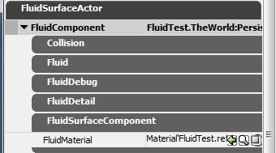

Fluid Surfaces Guide
Overview
Fluid Surfaces are flat objects that visualize waves by moving the vertices up and down and/or by animating a normalmap texture that can be used in the material. Each of these features only affect a smaller rectangular part of the whole fluid. Normally, these rectangles will be centered around the main player and the rest of the fluid will remain flat and unaffected by any forces. As a designer, you'll want to keep these rectangles as large and finely tessellated as you can, while still maintaining good memory and performance.
Fluid Surfaces are commonly used to simulate water.
There are two types of Fluid Surfaces: FluidSurfaceActor and FluidSurfaceActorMovable. The only difference is that the latter can be moved around by Matinee.
Simulation and Detail sub-grids
As mentioned, only a part of a FluidSurfaceActor has some detail. The rest is just a flat quad. The Simulation and Detail sub-grids move around within the FluidSurfaceActor, trying to center themselves around their respective "targets". When the TargetSimulation and TargetDetail properties are empty, they will center around the player.
You can see where the Simulation or Detail sub-grids are located within the FluidSurfaceActor by turning on bShowSimulationPosition or bShowDetailPosition. They will show up as rectangles. Since they move around and follows a target, you will probably want to test this in-game or in PIE. You can turn these on in-game with the "set" exec command. E.g: set fluidsurfacecomponent bShowSimulationPosition 1
Since Simulation grid uses vertex animation to visualize waves and ripples, that sub-grid will be highly tessellated and contain a lot of vertices. The Detail grid only moves around a normalmap texture and don't need any extra vertices.
The Simulation grid is simulated on the CPU in a separate thread. The Detail grid is simulated purely on the GPU, animating a normalmap texture.
Activation and deactivation
Fluids can be activated and deactivated. In the activate state, waves and ripples are simulated and the fluid are using up the required memory and performance. In the deactivated state, fluids use only a minimal amount of memory and they cost no extra performance other than rendering a static flat quad with the specified material.
Fluids start up as deactivated, but will be activated automatically if the player is within DeactivationDistance (as measured from the closest FluidSurfaceActor edge - not the Simulation or Detail edges) and a force is applied to a point within the Simulation or Detail grid. Any force that are applied outside these sub-grids will simply be ignored and the fluid stays in the deactivated state.
Once a fluid is activated, it will be deactivated automatically 10 seconds after the player moves outside the DeactivationDistance, no more forces are applied to the Simulation or Detail grids, and the fluid has settled down.
Generating waves
There are two ways of generating waves in a fluid: manual FluidSurfaceInfluenceActors or automatic physical interaction. Automatic interaction are handled by normal Touch events (this can also be hooked up in Kismet). Whenever an actor touches the fluid plane, an impact force is applied. The strength will be derived from the ForceImpact property, as well as the size and velocity of the touching actor. While the touching actor moves around on the fluid plane, a different (continuous) force is applied. This type of interaction uses the FluidContinuous property to determine the strength of the continuous force.
Note that the TestRipple uses the FluidImpact property for its impulses (when TestRippleFrequency is greater than 0). When TestRippleFrequency is 0, it will apply a continuous force using the ForceContinuous property.
Any force that is applied to a location outside the Simulation or Detail rectangles is ignored.
As a general tip for visual quality, a larger impact radius will normally generate nicer, smoother wave. A larger radius have a stabilizing effect on the simulation since more cells are affected by the force.
Creation
Select FluidSurfaceActor under the "Actor Classes" tab in the Generic Browser. Right-click somewhere in the world in a viewport and select "Add FluidSurfaceActor Here". Position and resize it as desired using the widgets and hit F4 (or double-click the actor, or right-click and select "FluidSurfaceActor Properties").
FluidSurfaceActors have 4 categories of properties: Fluid, FluidDebug, FluidDetail and FluidSurfaceComponent. While reviewing the property settings, keep that in mind that fluids have two ways of animating - moving vertices up/down and/or animating a normalmap texture. The former is usually referred to as "simulation" and the latter as "detail". Note that the simulation is processed on the CPU (in a separate thread) and the detail is processed on the GPU.
Properties: FluidSurfaceComponent
This category only contains the fluid material property, which is the only property you have to set to have a fully functional fluid.
- FluidMaterial
- Material used for rendering the fluid.
This can contain scrolling distortion maps for ambient turbulance as well as the special FluidNormal node for accessing the Detail texture.
Note that the material must have the bUsedWithFluidSurfaces checkbox enabled!
|
|  |
Properties: Fluid
These properties control the simulation (vertex animation) and the fluid as a whole.
- DeactivationDistance
- Distance between the player and the closest fluid edge where the fluid will deactivate and start rendering as a simple flat quad.
- EnableDetail
- Enables/disables the animation of the normalmap detail texture
- EnableSimulation
- Enables/disables the Simulation (vertex-animation)
- FluidDamping
- How much to dampen the amplitude of waves in the fluid Simulation (0.0-30.0)
- FluidHeightScale
- Wave height scale - higher value produces higher vertex waves in the Simulation
- FluidTravelSpeed
- Wave travel speed factor for the Simulation (0.0-1.0). This can be used to slow down the waves.
- FluidUpdateRate
- Simulation update rate in number of updates per second. Increasing this will make waves propagate faster but reduces performance.
- ForceContinuous
- Force factor for continuous interaction (in contrast to sudden impacts)
- ForceImpact
- Force factor for instantaneous interaction
- GPUTessellationFactor
- How much the GPU should tessellate the fluid grid. (Only used on platforms that completely supports GPU tessellation)
- GridSpacing
- The size of a Simulation grid cell (in world space units)
- GridSpacingLowRes
- Fluids automatically draw a low-resolution grid when they are deactivated. A reasonable value is needed for vertex fogging to work when the fluid is translucent. GridSpacingLowRes gets clamped if it's too low (resulting in more than 65000 vertices).
- LightingContrast
- Increasing this value adds more contrast to the lighting by exaggerating the curvature for the fluid vertex normals.
- SimulationQuadsX
- Number of vertex quads in the Simulation grid (along the X-axis)
- SimulationQuadsY
- Number of vertex quads in the Simulation grid (along the X-axis)
- TargetDetail
- Target actor which the detail texture will center around. If none is provided, the detail texture will center around the player.
- TargetSimulation
- Target actor which the simulation grid will center around. If none is provided, the simulation grid will center around the player.
|
| |
Properties: FluidDetail
These properties affect the Detail normalmap texture only.
- DetailDamping
- Same as FluidDamping, but for the Detail texture.
- DetailHeightScale
- Same as FluidHeightScale, but for the Detail texture. Increasing this will make the FluidNormal show more "contrast".
- DetailResolution
- Resolution of the Detail texture. The texture is square.
- DetailSize
- Size of the Detail grid within the fluid, in world-space units. The Detail grid is square.
- DetailTransfer
- This is a factor that modulates any forces applied (transferred) to the Detail texture. It's only useful if you use both the Simulation and Detail features on a FluidSurfaceActor.
- DetailTravelSpeed
- Same as FluidTravelSpeed, but for the Detail texture.
- DetailUpdateRate
- Same as FluidUpdateRate, but for the Detail texture.
|
| |
Properties: FluidDebug
These properties can be used while setting up and tweaking a FluidSurfaceActor. They have no affect in a FINAL_RELEASE build.
- bPause
- Turning this on will freeze the simulation in place.
- bShowDetailNormals
- Renders an overlay showing the Detail texture on screen.
- bShowDetailPosition
- Show the position of the Detail grid as a rectangle within the fluid.
- bShowFluidDetail
- Shows the Detail texture as flat, but keeps animating it in the background.
- bShowFluidSimulation
- Shows the Simulation as flat geometry, but keeps animating it in the background.
- bShowSimulationNormals
- Visualize the Simulation normals with lines.
- bShowSimulationPosition
- Show the position of the Simulation grid as a rectangle within the fluid.
- bTestRipple
- Turns the Test Ripple on/off.
- bTestRippleCenterOnDetail
- Whether to center the Test Ripple on the Detail grid.
- NormalLength
- Length of visulized Simulation normals.
- TestRippleFrequency
- Number of seconds between each pling on the test ripple. 0 makes it continuous.
- TestRippleRadius
- Radius of the test ripple, in world space.
- TestRippleSpeed
- Angular speed of the test ripple.
|
| |
Tips and best practices
We recommend using vertex-animation only for larger surfaces and normalmap-animation only for smaller surfaces like puddles. Using features at the same time can become cumbersome to tweak and will only waste memory and performance for little gain.
While the FluidSurfaceActor can be as large as you want, using large simulation or detail sub-grids can use up a lot of memory and hurt performance. The key is to have as large GridSpacing as you can without hurting the smoothness too much. Start with a high value (like 50) and gradually make it smaller until you're satisfied with the quality. Then adjust the size of the simulation grid with SimulationQuadsX and SimulationQuadsY until you have as large active rectangle as you need. Still, using larger grid than 300x300 will use up a lot of memory.
Turn on the "Test Rippple" to tweak the fluid properties in the editor and use Realtime Udate. The test ripple will activate the fluid so you can estimate the quality of your settings. Remember to use the lowest possible settings without hurting the quality too much, to keep memory and performance cost low.
Wave travel speed is affected by the resolution (GridSpacing/SimulationQuadsX/SimulationQuadsX or DetailSize/DetailResolution), FluidUpdateRate/DetailUpdateRate and FluidTravelSpeed/DetailTravelSpeed. Once you have a set the resolution for decent smooth waves, you want to tweak the wave speed with FluidTravelSpeed/DetailTravelSpeed. You should try to keep the update rates around 30 (lower will make the animation jerky, higher will cost performance).
Any force you apply to a fluid shouldn't have too small radius. Larger radius will make the waves look smoother.
Console commands
- togglefluids will turn all fluid simulation on/off and free up almost all memory it uses. This can be used to compare memory usage and performance hit.
- stat fluids will display memory and performance statistics. Remember that the statistics can vary greatly per platform!
Important!
You are viewing documentation for the Unreal Development Kit (UDK).
If you are looking for the Unreal Engine 4 documentation, please visit the Unreal Engine 4 Documentation site.